兩個方案任選：信義區看聖誕，或到台中騎后豐鐵馬道。
午晚餐都先訂位，節奏放慢，什麼都還沒訂。
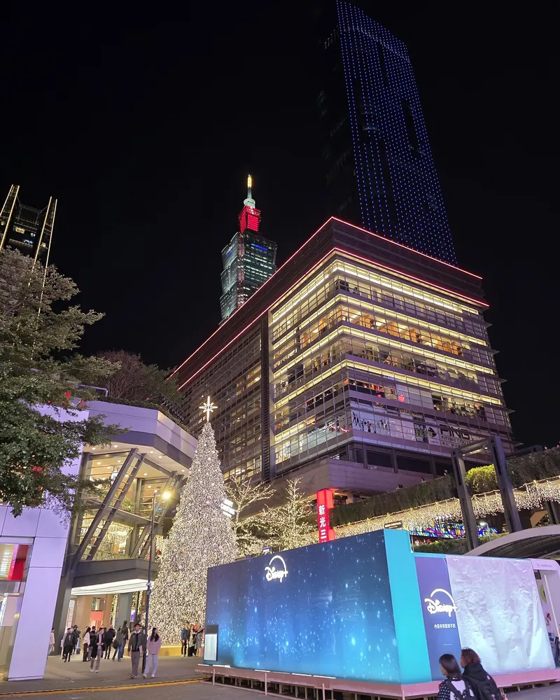
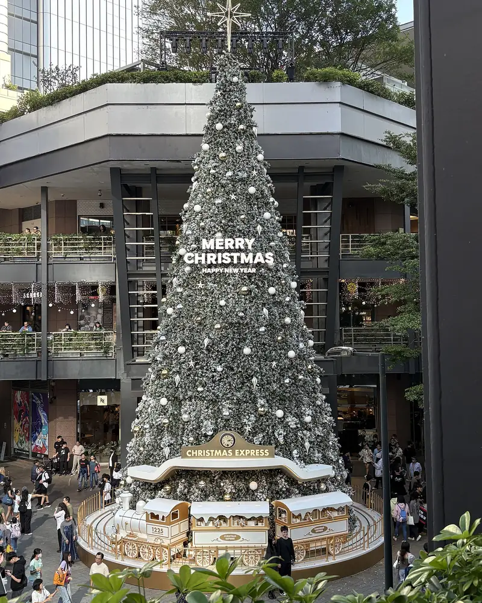
白天可在香堤大道看聖誕樹，傍晚再到 A11 看飄雪秀。101 外牆聖誕點燈只在 12/24～25，12/19 看不到那一項。
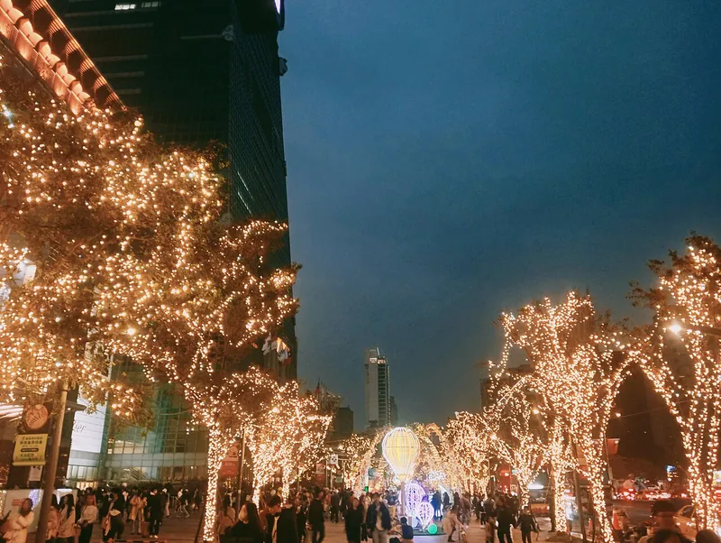
香堤、A11 附近的人行道與廣場，往年會有燈串和大型燈飾。這張是 2024 年的布置，2026 年造型會不同。101 外牆聖誕點燈只在 12/24～25，這天看不到那一項。
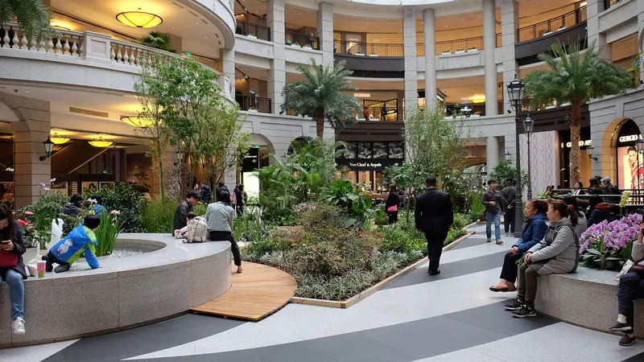
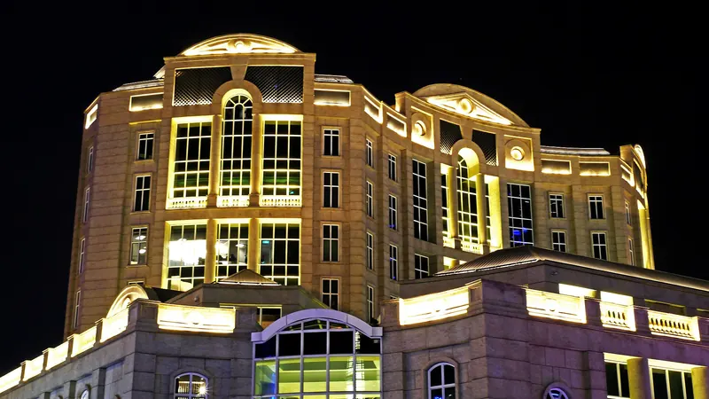
Dior 薑餅聖誕樹 11/22 撤展後，去年中庭換成巨型 Bello Bear 聖誕小熊加放大版聖誕餐桌，有麵包、薑餅人、甜點造景，小孩可以坐進棉花糖可可杯拍照，免費參觀。目前沒有可授權的現場照片，上方是中庭一般樣貌，不是今年布置。
南洋料理。帶小孩一律單點（套餐咖哩不能調辣），點餐時說「完全不放辣椒」。
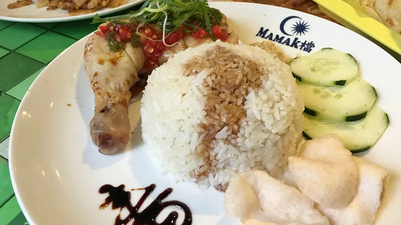
預估 3,000～3,500 元（含服務費，依食記推估）
價格取自漢來其他分店 2026 年菜單，此店可能略有差異。
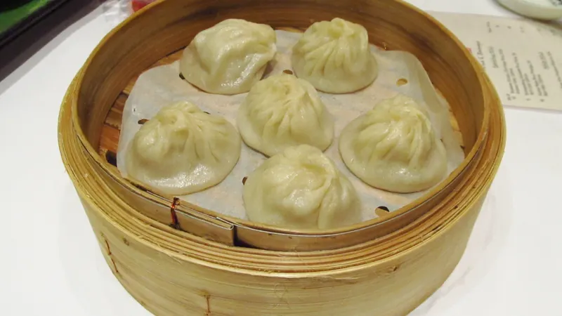
預估約 2,500 元（含一成服務費）
上海菜，有 2 間包廂。吃到飽只在週一到週四，週六單點。
預估 4,500～5,000 元（含一成服務費）
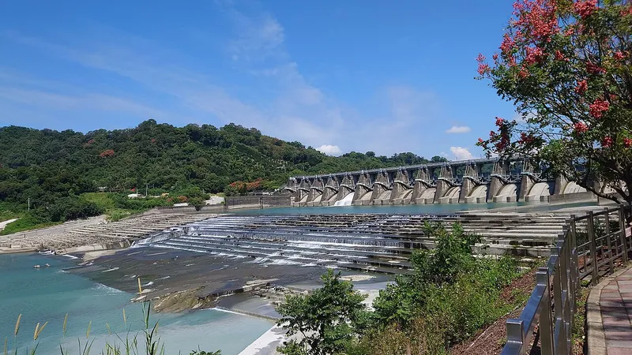
兩家開車到后里（預計兩台車），車停在后里，租電動輔助自行車並加裝 3 個兒童座，再來回騎：后里馬場 → 后豐鐵馬道（九號隧道、花樑鋼橋）→ 豐原 → 東豐綠廊 → 石岡壩（支線）→ 0 蛋月台 → 九房三滴彩繪村與石岡落羽松林，在九房一帶折返、原路回后里。午餐訂在這段中點附近（九房、落羽松林、0 蛋月台、情人木橋一帶），選有室內座位的咖啡廳或餐廳。晚餐再開車到后里交流道或豐原附近。首選仍是車停后里、原路來回；若想把行程拆成上下午兩段、中午回到車子旁邊，可改停豐原端，見下方「起點二」。
后豐鐵馬道官方 5.8 公里；從后里馬場出發，Google 地圖自行車路線約 7.1 公里、27 分鐘，多半含馬場到入口的銜接。東豐綠廊豐原起點到 0 蛋月台約 3.5～4.1 公里（遊記公里標，非官方單列），九房彩繪巷再往東約 0.3～0.8 公里。石岡落羽松林在九房里豐勢路山下巷，離九房彩繪約 400 公尺、離 0 蛋月台約 0.8 公里，是綠廊旁很短的步行或慢騎。石岡壩在綠廊西側支線，往返約多 1 公里。后里馬場到九房／落羽松林單程約 11～12 公里（含壩區支線約 12～13），原路來回約 22～24 公里。口頭說的「約 20 公里」略低估。若午餐再騎到情人木橋或慢遊巷弄，全日大約 24～26 公里。資料查詢日：2026/11/17。
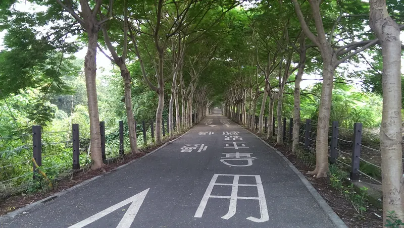
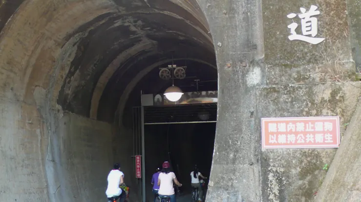
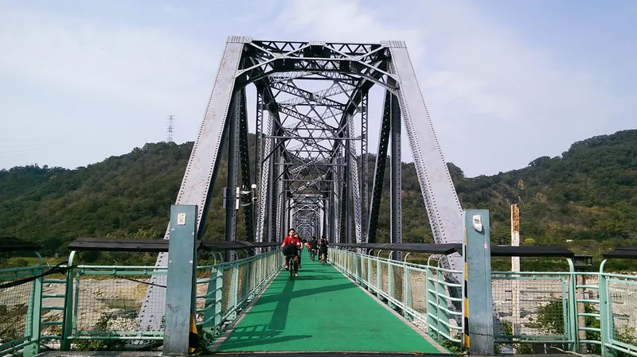
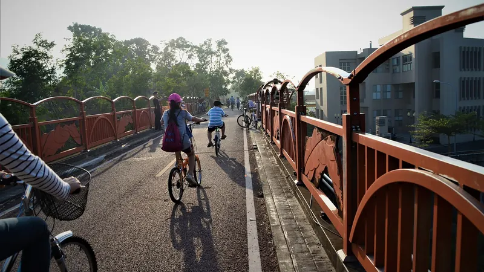
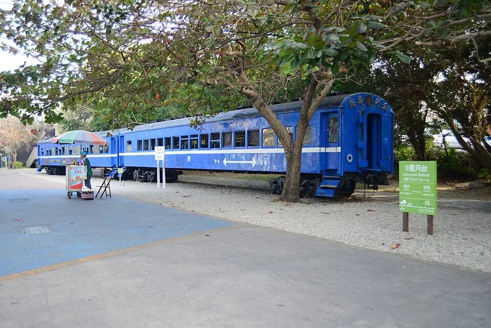
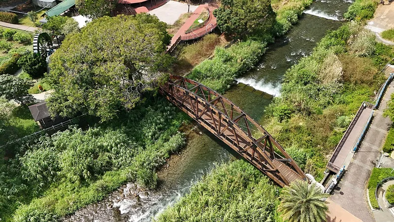
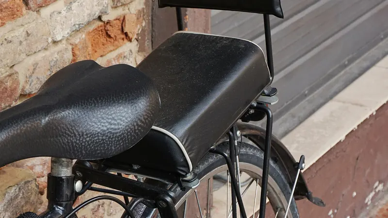
桃園龜山、林口：國 1 林口交流道南下，至后里交流道（160K）下，接甲后路或三豐路再轉馬場路。鐵馬哥指引是「馬場路開到底，面對后里馬場右轉」，寺山路 91 號。
從台北也可走國 1 南下；或走國 3 到新竹系統再轉國 1。后里交流道到店約 10～15 分。
車程：龜山一帶順暢約 1 小時 25 分～1.5 小時（約 112 公里）；台北出發官方寫走國 1 到台中約 2～2.5 小時，后里比市區稍北，多估 1.5～2 小時。12/19 是普通週六不是連假，但仍可能有出遊車潮，尤其國 1 五股–林口、桃竹路段。出發前用高速公路 1968看即時路況和旅行時間預測。
鐵馬哥官網寫店內有免費停車，把車開到店門口由店員安排。預約時先說兩台車、大概 09:00 到。旁邊另有收費停車場，費率未公開，以現場為準。
備案：后豐鐵馬道公有停車場（朴子街 177 巷附近）與后里東站停車場，台灣騎跡列為起點周邊停車，評論多寫免費，但假日車位不一定有，費率以現場公告為準。后里馬場園區停車是計次 100 元，不是第一選擇。
寺山路 91 號，店就在后豐鐵馬道起點，開車最方便。請租電動輔助自行車（有合格標章），不要租微型電動二輪車（禁行車道）。官網價：親子車 200 元；單人電動 400～500 元／兩小時；雙人電動 600～700 元／兩小時。電動車公會限時 2 小時，鐵馬哥多送 1 小時，合計約 3 小時；這天預計 09:30 出發、15:30 還車，約 6 小時，全日或超時怎麼計價請先打電話問清楚。可加裝兒童座（加價未公開，現場或電話確認）。
7 人可問：兩台雙人電輔車加兒童座，再加一台單人電輔車加兒童座。官網常見問答寫電池都在充飽後才出租，並說「來回總共 34 公里」時，一般電動車含休息、拍照、吃飯在時限內電力足夠。本行程原路來回約 22 公里，加上餐廳往返大約 24～26 公里，比他們說的 34 公里短；但有兒童座、載重較大，又有一段緩上坡，仍要問：這樣騎會不會夠、電力不足能不能換電池或帶備電。冬季假日有資料寫 07:00–17:30，請先確認，並在 16:30 前還車較保險。
甲后路一段 21 號。可甲租乙還，但車如果停在后里，還是要騎回來，這個服務這次用不到。官網觀光頁寫營業 08:00–19:00，電話 0930-681-103、0961-280-877。
撥 0930-681-103寺山路 39 號，0933-191-246。官網有電動親子車：加寬舒適版 500 元、雙載式 700 元，另有電動協力車 600 元。同樣先問有沒有停車位。
撥 0933-191-246首選仍是上面的后里出發、原路來回。這個備案是把車子停在后豐鐵馬道與東豐綠廊交會的豐原端，把一天拆成上下午兩段，中午可以回到車子旁邊。
地址：豐原區國豐路三段 145 巷 41 弄 36 號，就在后豐與東豐交會起點。電話 04-2529-7706、0932-612-792。官網寫園區有大型免費停車場（可停小客車與遊覽車）；兩處租車場地相連，一處靠自行車道起點，一處在國道四號橋下。資料查詢日：2026/11/17。來源：大木匠官網關於我們、常見問答。
官網有「單人／親子輪轂馬達電動腳踏車」（400 元，續航約 2 小時）與新款（500 元，約 2.5 小時），說明可加裝幼兒座椅或兒童座墊。請租有合格標章的電動輔助自行車，不要租微型電動二輪車。週六仍不能騎三輪以上車輛；官網四人敞篷車也寫平日限定。兒童座身高體重、一次是否有 3 個座、全日或超時計價、電力不足能否換電池，以及營業與最晚還車時間，都要先打電話問。官網寫租車可不預約、現場選車，但週六帶 3 個小孩仍建議先留車。
開車：國 1 南下轉國 4 東行，至終點附近下，往國豐路三段、東豐綠廊豐原起點；導航「大木匠租車」。附近國豐路三段、朴子街還有多家租車店。備案可問松錳租車豐原店（國豐路三段 141 號，04-2523-4783；官網列電動車與親子兒童座，交通部觀光署資料寫有停車場），電輔車能否加兒童座請先確認。來源：松錳官網據點／車款頁、臺中觀光旅遊網東豐綠廊租賃業者名單（查詢日 2026/11/17）。
上午：由豐原端往北騎后豐鐵馬道，看花樑鋼橋、九號隧道，原路折返。官方后豐 5.8 公里，來回約 11～12 公里。隧道靠近后里端，務必在冬季 18:00 前通過並折返。
中午：回到豐原端、車子附近吃飯、休息。小孩若累了，這裡就可以還車結束。可改訂ㄎㄠ一杯（04-2512-3378）。若仍想在石岡吃客家菜，午餐就要放到下午那一段，但車子不在身邊。
下午：體力還夠，再往東騎東豐綠廊：石岡壩（支線）→ 0 蛋月台 → 九房三滴彩繪村與石岡落羽松林，在九房一帶折返還車。豐原端到九房約 4.5～5.5 公里，含壩區支線單程約 6 公里，來回約 10～12 公里。兩段都騎的話，全日大約仍是 22～24 公里，和后里出發差不多，但中午可以卸貨、上車休息。若下午才在石岡吃飯，可訂石農咖啡或下面的石岡餐廳。
優點：行程可拆成兩段，中午回到車子旁邊；小孩累了下午就不用再騎，不必一次騎到石岡再折返后里。
缺點：豐原端店家雖多，但同時備有電輔車、兒童座、兩台車免費停車，以及全日計價與換電池的公開資訊，比后里鐵馬哥少，週六一次留到 3 個兒童座也可能比較沒把握。官網寫的電池續航約 2～2.5 小時，若上下午都騎、中間不還車，一定要先問超時與換電。因此仍建議預設從后里出發。
臺中觀光旅遊網官方長度 5.8 公里，由台鐵舊山線整建，建議約 1 小時；帶 3～5 歲小孩、加上每 30～40 分休息，單程預留 60～90 分。從后里馬場出發，Google 地圖自行車路線約 7.1 公里、預估 27 分鐘（2026/11/17），可能包含馬場園區到鐵馬道入口的銜接，走的仍是后豐鐵馬道本線。地圖若出現「私人或限制通行」之類提示，多半是這條專用道禁行汽車，不是要改走別條路。
舊山線最長隧道，有照明和通風。10–3 月多份資料寫開放 06:00–18:00，4–9 月到 19:00。關門後只能改騎馬路，很危險，務必在時限內折返。
1908 年完工，橫跨大甲溪。冬天橋上風明顯，停下來拍照時靠邊、給小孩加衣服，不要並排堵住。這裡也適合看溪谷生態，停留一下再走。
豐原端接著就是東豐自行車綠廊，官方全長 13.6 公里至東勢林業文化園區，海拔 239～378 公尺，往東勢、石岡方向緩緩上升，回程較輕鬆。這次不到東勢。由西往東：先到石岡壩支線，再回到本線經過 0 蛋月台，接著是九房三滴彩繪村與石岡落羽松林（同一帶，落羽松在山下巷，離彩繪約 400 公尺），這裡是折返點。豐原起點到 0 蛋月台約 3.5～4.1 公里（遊記里程標），九房再約 0.3～0.8 公里；壩區支線往返約多 1 公里。沿途可在朴口（朴子）車站、0 蛋月台與石岡遊客服務中心休息、上廁所。情人木橋、梅子車站更往東，午餐若選石農咖啡，只需再騎約 1 公里到情人木橋，不必騎到梅子或東勢。
1977 年完工，橫跨大甲溪，供應大台中民生與灌溉用水。水利署中區水資源分署寫每日 06:00–18:00 開放，全區免費；下游左側有停車場。921 地震造成右岸 16～18 號閘門嚴重受損，17、18 號約有 8 公尺落差，復建後改以階梯銜接，壩頂不能走汽車，自行車也請留在入口再步行。斷層遺蹟保留為震災景觀紀念地。右岸 16 號溢洪道有魚道，長 147 公尺、98 個水池，是復建時為大甲溪魚類上下游移動而設。石岡老街、石岡穀倉在附近。土牛客家文化館在德成巷 10 號，週二至週日 09:00–17:00，離壩區約 4～5 公里，這天若要準時回后里，不必強求。
舊台鐵東勢線石岡車站改建，綠廊本線必經。保留藍皮火車車廂與月台，名稱來自早年「零擔」攤販的諧音，也寫成零蛋、歐旦。旁邊有 3D 彩繪與遊客服務中心廁所，免費、全天可看。它在石岡壩之後、九房之前，先經過這裡再往東，不要把這裡當成終點。
正式名稱多寫「九房童話世界 3D 彩繪村」或「九房里 3D 立體彩繪」，「三滴」就是 3D。在東豐綠廊石岡段旁、石岡區公所（豐勢路 1033 號）與豐勢路九房巷一帶，免費、戶外、沒有固定關門時間，但請保持安靜、不要進入民宅。牆面是曾進成團隊的童話彩繪，有傑克與魔豆、三隻小豬、拇指姑娘等；石岡長老教會旁有較大的 4D 綠野仙蹤。彩繪分散在巷弄，帶 3～5 歲走 30～40 分即可。彩繪村旁就是石岡落羽松林，可一起走完再折返。查詢日：2026/11/17。來源：石岡區公所觀光景點資料、臺中觀光旅遊網東豐綠廊頁。
在石岡區九房里豐勢路山下巷 13 號一帶，靠近九房 3D 彩繪村、東豐綠廊與 0 蛋月台，也鄰近挑物古道。臺中市政府觀光旅遊局秋冬落羽松行程寫：沿綠廊看過石岡壩、0 蛋月台、九房 3D 彩繪村後，再從九房厝的豐勢路山下巷進入挑物古道附近的石岡落羽松。直線約離九房彩繪 400 公尺、離 0 蛋月台約 0.8 公里，是很短的步行或慢騎，不是另一條遠路。兩排落羽松夾著大草坪，帶 3～5 歲走走、拍照約 15～30 分即可。遊記與景點資料多寫免費，也常寫可全天看，屬私人土地由地主無償開放，請把垃圾帶走、不要踩踏樹根或騎上草地。現場沒有廁所，先在 0 蛋月台或石岡遊客服務中心解決。未找到官方自行車停車場，建議把車停在綠廊或山下巷入口再走進草坪，不要堵住巷道；汽車車位也少，我們這天是騎車，不必和自駕車搶位。12 月中通常是中部落羽松轉紅的季節，但葉色看當年寒流，可能提早或延後一至兩週。2025 年 12 月中有遊客寫天氣不夠冷、顏色沒有前一年紅；2026 年 1 月中才有「已轉紅、部分開始落葉」的紀錄。查詢日 2026/11/17 尚未查到本季（12/19 前）的現場轉色照片，出發前請再看即時照片。來源：臺中市政府觀光旅遊局「台灣好行 888 路豐后線悠遊秋冬限定落羽松」（並提醒花況視天氣、出發前再查）。
后豐、東豐和大甲溪、石岡壩一帶水域開闊，冬天適合帶小孩慢慢看鳥、認樹，但不保證每天都看得到同一種。
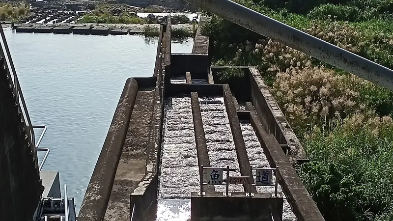
水利署石岡壩管理中心寫：取水口附近導流牆常見夜鷺（暗光鳥），上游濕地常有白鷺。交通部觀光署也把石岡水壩列為中部賞鳥點，可見小白鷺等。翠鳥、鉛色水鶇是台灣溪流常見的種類，花樑鋼橋下、壩區水域「有機會」看到，但這次沒有找到石岡壩當季的完整公開名錄，請當成找一找，不要當成保證。2022 年 12 月有賞鳥紀錄在壩區與綠廊附近看到小環頸鴴、小青足鷸、鸕鶿、樹鵲等（單一遊記，僅供參考）。魚道調查曾記錄台灣馬口魚、台灣石賓、粗首鱲等使用魚道。九房里山下巷的石岡落羽松林，是這天最順的看落羽松地點。12 月中通常是轉紅季節，但實際葉色看出發前現況，不要當成保證全紅。
四家都在這段中點附近（九房、落羽松林、0 蛋月台、石岡市區或情人木橋），優先選氣氛較好、有室內座位、可訂 7 人的咖啡廳或餐廳，適合兩家帶 3～5 歲小孩；12 月請訂室內座位，比較暖。點選後，上方時程會一起更新。若在豐原就折返，可改訂ㄎㄠ一杯（04-2512-3378）。
15:30 還車後再開車去吃，比較輕鬆。午餐已改在石岡，晚餐維持后里交流道或豐原附近，回家較順。
油錢以龜山～后里約 112 公里、台北出發較遠來估算；過路費依國 1 林口或台北交流道至后里、當日來回累計、每日 20 公里免費計算。12/19 不是連假，適用一般費率。實際以中油牌價、遠通試算和店家公告為準。